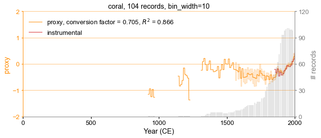

Proxy Composites
Contents
Proxy Composites#
In this tutorial, we introduce how to generate composites of proxies with cfr.
[1]:
%load_ext autoreload
%autoreload 2
import cfr
import pandas as pd
import numpy as np
Load the PAGES2k network stored in a pandas DataFrame#
[2]:
df = pd.read_pickle('./data/pages2k_dataset.pkl')
df.columns
[2]:
Index(['paleoData_pages2kID', 'dataSetName', 'archiveType', 'geo_meanElev',
'geo_meanLat', 'geo_meanLon', 'year', 'yearUnits',
'paleoData_variableName', 'paleoData_units', 'paleoData_values',
'paleoData_proxy'],
dtype='object')
Create a ProxyDatabase and load from the pandas DataFrame#
[3]:
pdb = cfr.ProxyDatabase().from_df(df)
fig, ax = pdb.plot()

Create composites for each proxy type#
We take corals as an example.
[4]:
pdb_corals = pdb.filter(by='ptype', keys='coral')
fig, ax = pdb_corals.plot()

We load instrumental temperature observations as a target for scaling the proxy values.
[7]:
# check the variable and dimension names
import xarray as xr
ds = xr.open_dataset('./data/HadCRUT.5.0.1.0.analysis.anomalies.ensemble_mean.nc')
ds
[7]:
<xarray.Dataset>
Dimensions: (time: 2052, latitude: 36, longitude: 72, bnds: 2)
Coordinates:
* time (time) datetime64[ns] 1850-01-16T12:00:00 ... 2020-12-1...
* latitude (latitude) float64 -87.5 -82.5 -77.5 ... 77.5 82.5 87.5
* longitude (longitude) float64 -177.5 -172.5 -167.5 ... 172.5 177.5
realization int64 100
Dimensions without coordinates: bnds
Data variables:
tas_mean (time, latitude, longitude) float64 ...
time_bnds (time, bnds) datetime64[ns] 1850-01-01 ... 2021-01-01
latitude_bnds (latitude, bnds) float64 -90.0 -85.0 -85.0 ... 85.0 90.0
longitude_bnds (longitude, bnds) float64 -180.0 -175.0 ... 175.0 180.0
realization_bnds (bnds) int64 1 200
Attributes:
comment: 2m air temperature over land blended with sea water tempera...
history:
institution: Met Office Hadley Centre / Climatic Research Unit, Universi...
licence: HadCRUT5 is licensed under the Open Government Licence v3.0...
reference: C. P. Morice, J. J. Kennedy, N. A. Rayner, J. P. Winn, E. H...
source: CRUTEM.5.0.1.0 HadSST.4.0.0.0
title: HadCRUT.5.0.1.0 blended land air temperature and sea-surfac...
version: HadCRUT.5.0.1.0
Conventions: CF-1.7xarray.Dataset
- time: 2052
- latitude: 36
- longitude: 72
- bnds: 2
- time(time)datetime64[ns]1850-01-16T12:00:00 ... 2020-12-...
- axis :
- T
- bounds :
- time_bnds
- standard_name :
- time
- long_name :
- time
array(['1850-01-16T12:00:00.000000000', '1850-02-15T00:00:00.000000000', '1850-03-16T12:00:00.000000000', ..., '2020-10-16T12:00:00.000000000', '2020-11-16T00:00:00.000000000', '2020-12-16T12:00:00.000000000'], dtype='datetime64[ns]') - latitude(latitude)float64-87.5 -82.5 -77.5 ... 82.5 87.5
- axis :
- Y
- bounds :
- latitude_bnds
- units :
- degrees_north
- standard_name :
- latitude
- long_name :
- latitude
array([-87.5, -82.5, -77.5, -72.5, -67.5, -62.5, -57.5, -52.5, -47.5, -42.5, -37.5, -32.5, -27.5, -22.5, -17.5, -12.5, -7.5, -2.5, 2.5, 7.5, 12.5, 17.5, 22.5, 27.5, 32.5, 37.5, 42.5, 47.5, 52.5, 57.5, 62.5, 67.5, 72.5, 77.5, 82.5, 87.5]) - longitude(longitude)float64-177.5 -172.5 ... 172.5 177.5
- axis :
- X
- bounds :
- longitude_bnds
- units :
- degrees_east
- standard_name :
- longitude
- long_name :
- longitude
array([-177.5, -172.5, -167.5, -162.5, -157.5, -152.5, -147.5, -142.5, -137.5, -132.5, -127.5, -122.5, -117.5, -112.5, -107.5, -102.5, -97.5, -92.5, -87.5, -82.5, -77.5, -72.5, -67.5, -62.5, -57.5, -52.5, -47.5, -42.5, -37.5, -32.5, -27.5, -22.5, -17.5, -12.5, -7.5, -2.5, 2.5, 7.5, 12.5, 17.5, 22.5, 27.5, 32.5, 37.5, 42.5, 47.5, 52.5, 57.5, 62.5, 67.5, 72.5, 77.5, 82.5, 87.5, 92.5, 97.5, 102.5, 107.5, 112.5, 117.5, 122.5, 127.5, 132.5, 137.5, 142.5, 147.5, 152.5, 157.5, 162.5, 167.5, 172.5, 177.5]) - realization()int64...
- bounds :
- realization_bnds
- units :
- 1
- standard_name :
- realization
array(100)
- tas_mean(time, latitude, longitude)float64...
- long_name :
- blended air_temperature_anomaly over land with sea_water_temperature_anomaly
- units :
- K
- cell_methods :
- area: mean (interval: 5.0 degrees_north 5.0 degrees_east) time: mean (interval: 1 month) realization: mean
[5318784 values with dtype=float64]
- time_bnds(time, bnds)datetime64[ns]...
array([['1850-01-01T00:00:00.000000000', '1850-02-01T00:00:00.000000000'], ['1850-02-01T00:00:00.000000000', '1850-03-01T00:00:00.000000000'], ['1850-03-01T00:00:00.000000000', '1850-04-01T00:00:00.000000000'], ..., ['2020-10-01T00:00:00.000000000', '2020-11-01T00:00:00.000000000'], ['2020-11-01T00:00:00.000000000', '2020-12-01T00:00:00.000000000'], ['2020-12-01T00:00:00.000000000', '2021-01-01T00:00:00.000000000']], dtype='datetime64[ns]') - latitude_bnds(latitude, bnds)float64...
array([[-90., -85.], [-85., -80.], [-80., -75.], [-75., -70.], [-70., -65.], [-65., -60.], [-60., -55.], [-55., -50.], [-50., -45.], [-45., -40.], [-40., -35.], [-35., -30.], [-30., -25.], [-25., -20.], [-20., -15.], [-15., -10.], [-10., -5.], [ -5., 0.], [ 0., 5.], [ 5., 10.], [ 10., 15.], [ 15., 20.], [ 20., 25.], [ 25., 30.], [ 30., 35.], [ 35., 40.], [ 40., 45.], [ 45., 50.], [ 50., 55.], [ 55., 60.], [ 60., 65.], [ 65., 70.], [ 70., 75.], [ 75., 80.], [ 80., 85.], [ 85., 90.]]) - longitude_bnds(longitude, bnds)float64...
array([[-180., -175.], [-175., -170.], [-170., -165.], [-165., -160.], [-160., -155.], [-155., -150.], [-150., -145.], [-145., -140.], [-140., -135.], [-135., -130.], [-130., -125.], [-125., -120.], [-120., -115.], [-115., -110.], [-110., -105.], [-105., -100.], [-100., -95.], [ -95., -90.], [ -90., -85.], [ -85., -80.], [ -80., -75.], [ -75., -70.], [ -70., -65.], [ -65., -60.], [ -60., -55.], [ -55., -50.], [ -50., -45.], [ -45., -40.], [ -40., -35.], [ -35., -30.], [ -30., -25.], [ -25., -20.], [ -20., -15.], [ -15., -10.], [ -10., -5.], [ -5., 0.], [ 0., 5.], [ 5., 10.], [ 10., 15.], [ 15., 20.], [ 20., 25.], [ 25., 30.], [ 30., 35.], [ 35., 40.], [ 40., 45.], [ 45., 50.], [ 50., 55.], [ 55., 60.], [ 60., 65.], [ 65., 70.], [ 70., 75.], [ 75., 80.], [ 80., 85.], [ 85., 90.], [ 90., 95.], [ 95., 100.], [ 100., 105.], [ 105., 110.], [ 110., 115.], [ 115., 120.], [ 120., 125.], [ 125., 130.], [ 130., 135.], [ 135., 140.], [ 140., 145.], [ 145., 150.], [ 150., 155.], [ 155., 160.], [ 160., 165.], [ 165., 170.], [ 170., 175.], [ 175., 180.]]) - realization_bnds(bnds)int64...
array([ 1, 200])
- comment :
- 2m air temperature over land blended with sea water temperature at a depth of 20cm expressed as monthly anomalies relative to 1961-1990 climatology.
- history :
- institution :
- Met Office Hadley Centre / Climatic Research Unit, University of East Anglia
- licence :
- HadCRUT5 is licensed under the Open Government Licence v3.0 except where otherwise stated. To view this licence, visit https://www.nationalarchives.gov.uk/doc/open-government-licence/version/3
- reference :
- C. P. Morice, J. J. Kennedy, N. A. Rayner, J. P. Winn, E. Hogan, R. E. Killick, R. J. H. Dunn, T. J. Osborn, P. D. Jones and I. R. Simpson (2020), An updated assessment of near-surface temperature change from 1850: the HadCRUT5 dataset, Submitted to J. Geophys. Res.
- source :
- CRUTEM.5.0.1.0 HadSST.4.0.0.0
- title :
- HadCRUT.5.0.1.0 blended land air temperature and sea-surface temperature anomaly data set
- version :
- HadCRUT.5.0.1.0
- Conventions :
- CF-1.7
[12]:
obs = cfr.ClimateField().load_nc(
'./data/HadCRUT.5.0.1.0.analysis.anomalies.ensemble_mean.nc',
vn='tas_mean', lat_name='latitude', lon_name='longitude',
)
obs = obs.rename('tas')
fig, ax = obs.plot(it=-1)

[16]:
pdb_corals.make_composite(obs)
Analyzing ProxyRecord: 12%|█▎ | 13/104 [00:00<00:01, 61.86it/s]/Users/fzhu/Apps/miniconda3/envs/cfr-env/lib/python3.9/site-packages/numpy/lib/function_base.py:495: RuntimeWarning: Mean of empty slice.
avg = a.mean(axis)
/Users/fzhu/Apps/miniconda3/envs/cfr-env/lib/python3.9/site-packages/numpy/core/_methods.py:189: RuntimeWarning: invalid value encountered in double_scalars
ret = ret.dtype.type(ret / rcount)
Analyzing ProxyRecord: 19%|█▉ | 20/104 [00:00<00:01, 62.29it/s]/Users/fzhu/Apps/miniconda3/envs/cfr-env/lib/python3.9/site-packages/numpy/lib/function_base.py:495: RuntimeWarning: Mean of empty slice.
avg = a.mean(axis)
/Users/fzhu/Apps/miniconda3/envs/cfr-env/lib/python3.9/site-packages/numpy/core/_methods.py:189: RuntimeWarning: invalid value encountered in double_scalars
ret = ret.dtype.type(ret / rcount)
Analyzing ProxyRecord: 39%|███▉ | 41/104 [00:00<00:00, 64.34it/s]/Users/fzhu/Apps/miniconda3/envs/cfr-env/lib/python3.9/site-packages/numpy/lib/function_base.py:495: RuntimeWarning: Mean of empty slice.
avg = a.mean(axis)
/Users/fzhu/Apps/miniconda3/envs/cfr-env/lib/python3.9/site-packages/numpy/core/_methods.py:189: RuntimeWarning: invalid value encountered in double_scalars
ret = ret.dtype.type(ret / rcount)
Analyzing ProxyRecord: 100%|██████████| 104/104 [00:01<00:00, 62.21it/s]
/Users/fzhu/Apps/miniconda3/envs/cfr-env/lib/python3.9/site-packages/pandas/core/apply.py:867: RuntimeWarning: Mean of empty slice
results[i] = self.f(v)
Bootstrapping: 0%| | 0/110 [00:00<?, ?it/s]/Users/fzhu/Github/cfr/cfr/utils.py:127: RuntimeWarning: Mean of empty slice
stats[i] = stat_func(samples[rand_ind])
Bootstrapping: 100%|██████████| 110/110 [00:01<00:00, 65.41it/s]
[19]:
fig, ax = pdb_corals.plot_composite()
cfr.showfig(fig)
cfr.savefig(fig, './figs/coral_composites.pdf')

Figure saved at: "figs/coral_composites.pdf"
[ ]: